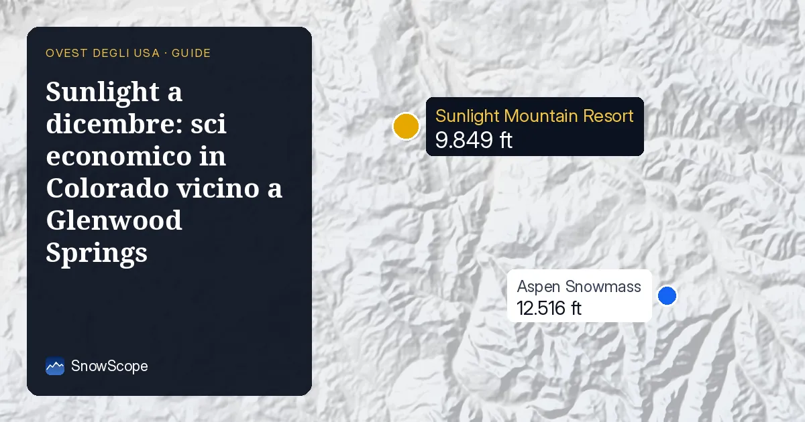

Sunlight a dicembre: sci economico in Colorado vicino a Glenwood Springs
Sunlight è la stazione del Colorado che la gente si scorda mentre fa la coda sulla I-70. Si trova sopra Glenwood Springs, i suoi biglietti partono da 74 $, ed è nell'Indy Pass. La neve di dicembre qui è discreta secondo la nostra serie storica, ma non è una certezza.
Le previsioni neve in tempo reale per Sunlight Mountain Resort nell'app SnowScopeAltezza neve, allerte powder e mappa 3D, gratis.
Lontano dalla folla
Sulla nostra mappatura Sunlight è piccola: 3 impianti e circa 23 mi (37 km) di piste, da circa 8.140 ft (2.480 m) a 9.850 ft (3.002 m). Glenwood Springs, con le sue terme, è la città sotto, il che rende una giornata di sci qui facile da abbinare a un bagno serale.

I prezzi, e una scadenza
I biglietti singoli e multi-giorno partono da 74 $. L'offerta migliore è il Sunny 6 Pack: sei skipass da 349 $, ma l'offerta finisce il 30 novembre 2026, quindi va comprata prima che la stagione inizi davvero.
Sunlight è anche nella lista dell'Indy Pass. L'Indy Base Pass è a 419 $ e l'Indy+ Pass a 469 $, ciascuno con due giorni in ogni stazione aderente.

Dicembre, settimana per settimana
La neve persistente di solito raggiunge mezza montagna, circa 8.990 ft (2.741 m), a metà ottobre. Un tipico 1° dicembre ha lì 20 in (51 cm), il 15 dicembre 26 in (67 cm), e il giorno di Natale 31 in (80 cm).
La quota di settimane con buona neve a mezza montagna (una media settimanale di 20 in, 50 cm, o più) è del 57 % nella prima settimana di dicembre, 61 % nella seconda, 78 % nella terza e 87 % nella settimana di Natale. Il 15 dicembre, il 72 % degli inverni aveva 20 in o più a mezza montagna. Un dicembre magro lasciava 13 in (34 cm): sufficiente per qualche pista battuta, non per i boschi.
Sunlight contro Ski Cooper, Wolf Creek e Vail
Ski Cooper ha quasi la stessa neve a mezza montagna, 26 in (66 cm) in un tipico 15 dicembre, e un prezzo feriale di 49 $ (99 $ nel weekend e nei festivi). Wolf Creek è più innevata, 34 in (87 cm), a 96 $ nei giorni normali e 110 $ nei giorni di punta. Vail aveva 24 in (62 cm) a mezza montagna in un tipico 15 dicembre secondo i nostri dati; non abbiamo confrontato il suo prezzo.
Il vantaggio di Sunlight è il 6 Pack per chi decide presto, e la coda corta.
L'angolo onesto
L'inizio stagione qui è scivolato un po': 29 in (74 cm) a mezza montagna in un tipico 15 dicembre nei primi 15 inverni della nostra serie storica, 25 in (63 cm) negli ultimi 15, e la quota sopra i 20 in è scesa dall'80 % al 60 %. Lo scorso inverno ha dato 14 in (35 cm) a quella data. Per un viaggio di dicembre, puntate alla settimana prima di Natale.
Consigli per sciatori
- Decidete entro il 30 novembre se volete il 6 Pack.
- Puntate al 14-24 dicembre, prima delle festività e dopo l'incertezza di inizio dicembre.
- La strada da Glenwood Springs è stretta e tortuosa: gomme da neve raccomandate.
- Combinate lo sci con le terme lo stesso giorno: è un tragitto breve.
Riferimenti e crediti
- Sunlight Mountain Resort, lift tickets (official) sunlightmtn.com/lift-tickets/
- Indy Pass, shop 2026-27 (official) www.indyskipass.com/shop
- Ski Cooper, day pass 2026-27 (official) www.skicooper.com/cooper-day-pass/
- Wolf Creek Ski Area, tickets and passes 2026-2027 (official) wolfcreekski.com/tickets-passes/
- OpenSkiMap (mapped lifts and runs) openskimap.org/
- avalanche.org, US avalanche centers and forecasts avalanche.org/
Su questi numeri
Numeri della neve: storico neve SnowScope, 46 inverni passati (1980-81 - 2025-26) alle quote indicate (base, metà, vetta), una ricostruzione della neve passata per un'area corretta per la quota (basata su ERA5-Land; Snow_Hydro 1 km per il Marocco), non i bollettini della località. Neve attuale: la mappa SnowScope. Impianti, piste e quote: mappatura OpenSkiMap. Prezzi: le pagine ufficiali elencate qui sotto, lette il 13 novembre 2026; i prezzi dinamici cambiano con la data e la domanda.
Bollettini valanghe ufficiali: Colorado Avalanche Information Center
Cita questo articolo
Per ricerca, didattica o stampa: numeri e grafici sono liberamente riutilizzabili con licenza CC BY 4.0 citando così.
SnowScope (2026), Sunlight a dicembre: sci economico in Colorado vicino a Glenwood Springs, https://snowscope.app/blog/it/2026/11/sunlight-mountain-glenwood-springs-december-value.html, consultato il 2026-11-15
SnowScope (Atlas Labs). (2026, November 15). Sunlight a dicembre: sci economico in Colorado vicino a Glenwood Springs. SnowScope snow reports. https://snowscope.app/blog/it/2026/11/sunlight-mountain-glenwood-springs-december-value.html
BibTeX
@misc{snowscope2026sunlightmountainglenwood,
author = {{SnowScope (Atlas Labs)}},
title = {Sunlight a dicembre: sci economico in Colorado vicino a Glenwood Springs},
year = {2026},
month = nov,
howpublished = {\url{https://snowscope.app/blog/it/2026/11/sunlight-mountain-glenwood-springs-december-value.html}},
note = {Published 2026-11-15 09:34 UTC; accessed 2026-11-15}
}· CC BY 4.0 · Metodi, dati e strumenti →
Sunlight Mountain Resort: neve e temperatura per quota, quest'inverno vs lo scorso (strumenti) →
Segui Sunlight Mountain Resort
Gratis: un messaggio quando arriva la neve e il meteo ogni mattina.